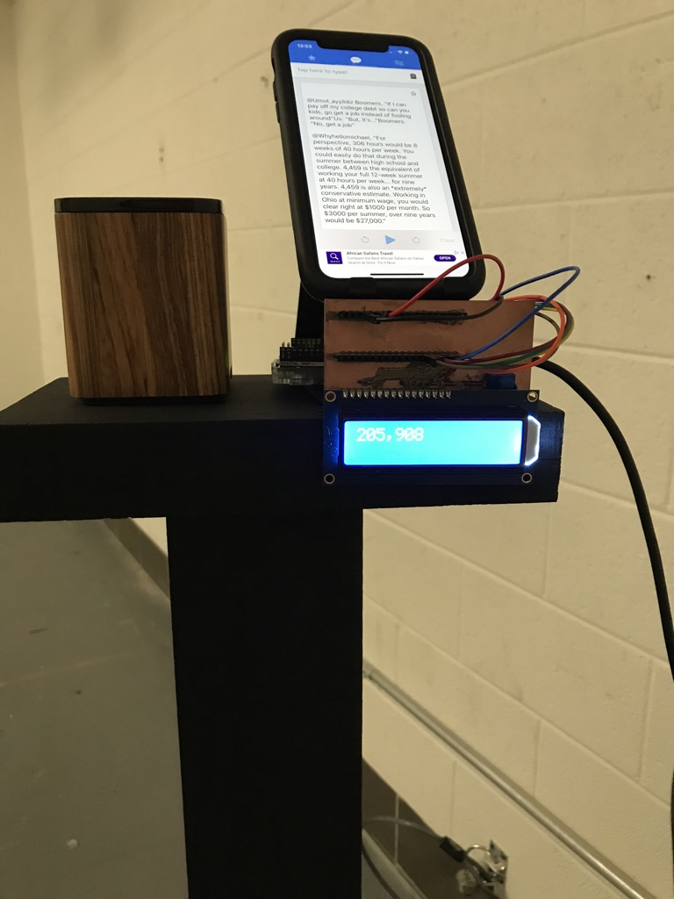
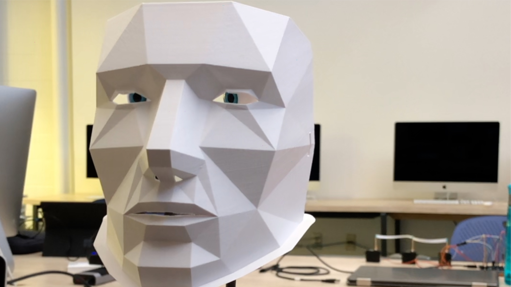

Projects
-

- instaX Arduino
-

- Interaction
- 
- Political Arduino
- 
- Alonzo dc motor
The goal of this project was to see how/if people would interact with a camera taking photos of them as they passed by.
The goal of this project was to view the interaction of people and a computer when they are unaware they're being recorded.
The goal of this project was to recreate the confusion surrounding politics and the media and immerse people in it.
The goal of this project is to draw attention to the discomfort of being watched and why thats different when its a machine.